Il calcolo differenziale sviluppato fin qui ci permette ora di affrontare in modo completo un tipico problema, quello di tracciare il grafico di una funzione f di una variabile (anche se l'avvento dei calcolatori ha reso possibile la costruzione automatica dei grafici di funzioni). Alcuni passi obbligatori:
Determinare l'insieme su cui f è definita, ossia il dominio di f, Dom(f);
Stabilire se la funzione ha eventuali simmetrie. cioè se è pari o dispari e restringere quindi lo studio a x ≥ 0; o è periodica;
Determinare il segno di f e le eventuali intersezioni con gli assi; si ricordi però che non sempre è possibile calcolare esplicitamente questi punti di intersezione; in generale, queste informazioni si possono dedurre solo al termine dello studio, come conseguenza delle altre informazioni;
Quindi, calcolare i limiti (o limiti destri, sinistri) alla frontiera di tale insieme (compresi, eventualmente ±∞). In questa fase si determinano gli eventuali asintoti orizzontali, verticali, obliqui e alcuni eventuali punti di discontinuità;
Se per x ⟶ ±∞ la funzione tende a ±∞, occorre chiedersi se la funzione presenta un asintoto obliquo. Più in generale, può essere utile una stima asintotica che ci dice se f tende a ∞ in modo sopra o sottolineare (e in tal caso certamente non ha asintoto obliquio) o in modo lineare (e in tal caso può avere o non avere asintoto obliquo). La stima asintotica all'infinito dà normalmente anche un'informazione sulla concavità di f all'infinito;
Calcolare f'(x), nei punti in cui esiste. Studiare accuratamente i punti in cui f è continua ma non derivabile e stabilirne la natura (punti angolosi, di flesso a tangente verticale, di cuspide). In punti angoloso o agli estremi del dominio è utile il calcolo di derivate destre o sinistre che determinano la pendenza del grafico in quei punti. Studiare quindi il segno di f' (sul suo insieme di definizione), per ottenere le informazioni sulla monotonia di f e sui suoi punti di massimo e minimo relativi.
Calcolare la derivata seconda a studiarne il segno, per dedurre informazioni sulla concavità e i flessi di f. Si tenga presente che in motli casi l'espressione di f'' è troppo complessa perché se ne riescano a determinare esattamente gli zeri. In questo caso, il calcolo di f'' non aggiunge niente a ciò che un utilizzo attento di limiti, stime asintotiche e derivata prima permette già di affermare.
Un'ultima avvertenza: è utile tracciare il grafico graduatamente, inserendo le informazioni via via raccolte (eventualmente correggendosi), anziché raccogliere tutte le informazioni e poi fare il grafico: i progressi graduali aiutano a controllare la coerenza del procedimento e a capire quali informazioni è ancora utile raccogliere.
f(x) = x3e−x
domf = ℝ. Valutiamo il comportamento all'infinito:
La semplicità dell'espressione analitica ci permette anche di dedurre immediatamente che
f(x) > 0 per x > 0 f(x) < 0 per x < 0
f si annulla in x = 0 e per x ⟶ 0 si ha f(x) ~ x3. A questo punto conviene fermarci per tracciare un grafico coerente con le informazioni ottenute sino a questo momento. Ciò può far risparimare molto tempo successivamente.
Ci aspettiamo un massimo per x > 0 e, probabilmente, nessum estremo per x < 0; in più un flesso a tangente orizzontale in x = 0 e altri due flessi (prima e dopo il punto di massimo). Se i calcoli non confermeranno questo, vuol dire che da qualche parte è stato commesso un errore. La derivata prima di f è:
f'(x) = x2 (3 − x)e−x
e si annulla per x = 0 e x = 3. Abbiamo trovato, come previsto un punto stazionario in x = 0 e ci aspettiamo che x = 3 sia punto di massimo. Per maggior sicurezza controlliamo anche il segno di f'. Si ha che f' è positiva per x > 3. Riportiamo il risultato nello schema
x < 0
0 < x < 3
x > 3
f'
+
+
−
f
↗
↗
↘
Come previsto, il punto x = 0 risulta punto di flesso a tangente orizzontale e il punto x = 3 punto di massimo locale per f. Volendo essere ancora più precisi, calcoliamo anche f'', per studiare la convessità/concavità. Si trova
f''(x) = x (6 − 6x + x2)e−x
che si annulla per x = 0 e x = 3 ± √3, i previsti punti di flesso per f. Un grafico qualitativo di f è il seguente:
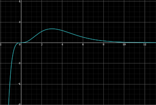
x3e−x
f(x) = x/lnx
domf = (0,1) ∪ (1,+∞). La scrittura mette in evidenza i limiti che occorre considerare: per x ⟶ 0+, x ⟶ 1±, x ⟶ +∞. Si ha
I limiti per x ⟶ 1± segnalano la presenza di un asintoto verticale di equazione x = 1. Non possono esistere asintoti obliqui, essendo il comportamento di f all'infinito "sublineare". Ci aspettiamo un punto di min per x > 1. Poiché per x ⟶ +∞, f ⟶ +∞ meno velocemente di x, ci aspettiamo una funzione concava e quindi un flesso per x > 1. Va valutato bene il comportamento di f per x ⟶ 0+. Calcoliamo la derivata prima:
f'(x) = (lnx −1)/(lnx)2
Essa si annulla per x = e ed è positiva per x > e.
0 < x < 1
1 < x < e
x > e
f'
−
−
+
f
↘
↘
↗
Il punto x = e, è il previsto punto di min locale per f. La derivata seconda
f''(x) = (−lnx +2)/x(lnx)3
si annulla per x = e2, che è il previsto punto di flesso per f. Si nota anche che f'' è negativa per x > e2. Infine, poiché
limx ⟶ 0+f'(x) = 0
Il grafico si avvicina a x = 0 con tangente sempre più orizzontale. Un grafico di f è il seguente:
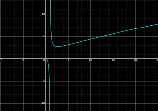
x/ln x
f(x) = (x − 1)2/x
Scrivendo
si vede che f ha come grafico un'iperbole avente per asintoti le rette x = 0 e y = x − 2, infatti si può ottenere sommando la retta di equazione y = x − 2, all'iperbole di equazione y = 1/x. f è definita per x ≠ 0 e si annulla in x = 1. Poiché in un intorno di x = 1 risulta f(x) ≥ 0, x = 1 è punto di min locale.
f'(x) = 1 − 1/x2
si annulla per x = ±1, che sono quindi punti stazionari.
f'(x) = 2/x3
ha lo stesso segno di x. f è concava per x < 0 e convessa per x < 0. Il punto x = −1 è di max locale. Il grafico di f è il seguente
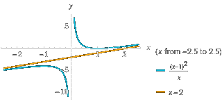
f(x) = √(x2 − 1)
La funzione è definita per quei valori di x tali che x2 − 1 ≥ 0, cioè se x ≤ −1 oppure x ≥ 1. Ne segue che Dom(f) = (−∞, −1] ∪ [1, +∞).
f è una funzione pari: infatti il suo dominio è simmetrico rispetto all'origine e
Di conseguenza, sarà sufficiente studiare f solo per x ≥ 1 e riportare per simmetria rispetto all'asse y l'andamento nella regione x ≤ 1;
La funzione "radice quadrata" è sempre ≥ 0 e si annulla se e solo se il suo argomento è nullo. Di conseguenza, si ha f(±1) = 0 e f(x) > 0, ∀x ∈ Dom(f), x ≠ ± 1;
Determiniamo l'andamento di f per x ⟶ +∞ (per quanto detto non abbiamo bisogno di studiare l'andamento di f per x ≤ −1 grazie alla simmetria). Si ha che
limx ⟶ +∞f(x) = +∞
È dunque possibile che f abbia un asintoto obliquo per x ⟶ +∞. Seguimano lo schema descritto per il calcolo degli asintoti obliqui. Iniziamo a calcolare
Poiché questo limite esiste finito, si tratta ora di stabilire se esiste finito anche il limite f(x) − x:
In conclusione la retta y = x è asintoto obliquo per x ⟶ +∞. Per simmetria, la retta y = −x sarà asitnto obliquo per x ⟶ −∞.
f è continua su tutto il suo dominio; in particolare, nei punti di frontiera del dominio, si ha f(±1) = 0.
Poiché la funzione g(y) = √y è derivabile solo per y > 0, dal T. di derivazione della f composta abbiamo che f è certamente derivabile quando x < −1 oppure x > 1 (cioè se |x| > 1), e la sua derivata è data da
f'(x) = x/√(x2 − 1), |x| > 1
Osserviamo che
limx ⟶ 1+f'(x) = +∞
di conseguenza f+(1) = +∞. Questo significa che il grafico di f ha tangente verticale nel punto (1,0). Sempre per simmetria, si avrà anche i>f−(−1) = +∞. Per x > 1 si ha anche che f'(x) > 0, quindi f è strettamente monotona crescente nella semiretta (1,+&nfin;). Per simmetria f sarà invece strettamente monotona decrescente in (−∞,−1). In particolare, i punti x = ±1 sono punti di minimo assoluto di f (questo poteva essere stabilito giò dallo studio del segno e degli zeri di f); non ci sono altri punti di estremo assoluto o relativo.
Sempre per il T. di derivazione della funzione composta, abbiamo che f' è certamente derivabile quando |x| > 1, dunque f è derivabile due volte per tali valori di x. Calcoliamo f''. A tale proposito possiamo utilizzare o la formula di derivazione del quoziente oppure la formula di derivazione del prodotto, scrivendo f' nella forma f'(x) = x(x2 − 1)−1/2. Utilizzando il secondo metodo si ha
Di conseguenza abbiamo che f''() < 0 se |x| > 1, quindi f è concava sia in (−∞,−1) che in (1,+∞). Il grafico è il seguente:
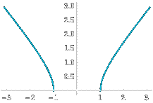
Grafico di f(x) = √(x2 − 1)
f(x) = 1/(logx − 3)
Dom(f) = {x ∈ ℝ; x ≠ 4, x > 3} = (3,4) ∪ (4, +∞).
Simmetrie e periodicità: la funzione non è né pari né dispari né periodica.
Segno e intersezioni con gli assi: il segno della funzione conincide con il segno di log(x − 3) > 0. La disuguaglianza log(x − 3) > 0 è verificata se e solo se x − 3 > 1 ossia nell'intervallo (4,+∞). La funzione è negativa in (3,4) (osserviamo che la disuguaglianza x − 3 < 1 è verificata per x < 4, ma non ha senso parlare del segno della funzione fuori dal dominio. Ovviamaente la funzione non si annulla mai (affinché un rapporto sia nullo si deve annullare il numeratore, che in questo caso è la costante 1).
Comportamento all'infinito: la fuzione è definita sulla semiretta (4,+∞), calcoliamo
limx ⟶ ∞ 1/log(x −3) = 0
e l'asse x è asintoto ozizzontale a +∞
Limiti nei punti di frontiera del dominio: in questo caso i punti sono x = 3, dove è possibile calcolare solo il limtie destro e x = 4, dove dovremo calcolare sia il limtie destro che il limite sinistro. Quando x tende a 3 da destra, il termine x − 3 tende a zero e, di conseguenza, il termine log(x − 3) diverge a −∞. Ne concludiamo che
limx ⟶ 3+ 1/log(x − 3) = 0
Quindi la funzione può essere prolungata con continuità in x = 3 (che non appartiene al suo dominio naturale) ponendo f(3) = 0. Restano da calcolare i limite in 4. Se x tende a 4 da sinistra, il termine log(x −3) tende a zero e ha sempre segno positivo, quindi
limx ⟶ 4+ 1/log(x − 3) = +∞
Se invece x tende a 4 da sinitra, il termine log(x −3) continua a tendere a zero, ma questa volta ha sempre segno negativo, dunque
limx ⟶ 4− 1/log(x − 3) = −∞
La retta verticale x = 4 è quindi un asintoto verticale.
Crescenza e decrescenza, massimi e minimi: f è derivabile in tutto il suo dominio, quindi si può sempre applicare il test di monotonia. Calcoliamo la derivata prima:
Il segno della derivata prima è opposto al segno del denominatore (il numeratore è una costante negativa). A sua volta il denominatore è il prodotto di due termini positivi nel dominio della funzione. Quindi la derivata prima della funzione è sempre negativa e, per il test id monotonia, la funzione è decrescente sia in (3,4) che in (4,+∞). Non ci sono punti stazionari (f' non si annulla mai). Vediamo la pendenza con cui il grafio della funzione arriva nel punot (3,0):
limx ⟶ 3+ −1/(x −3)(log(x−1))2 = −∞
quindi il grafico di f entra in (3,0) con tangente verticale.
Per risolvere l'equazione, calcoliamo l'esponenziale di ciascun membro:
elog(x −3) = e−2 ⇔ x −3 = e−2 ⇔ x = 3 + e−2
Quindi f'' si annulla per x = 3 + e−2. Lo studio del segno di f'' è sintetizzato nel seguente schema:
(log x − 3) +2 ≥ 0 per [3+e−2, ∞)
(x − 3)2 [(log x − 3)3 ≥ 0 per [4,+∞]
f''(x) ≥ 0 (3, 3+e−2] v [4, +∞] e f''(x) ≤ 0 per [3+e−2, 4]
Ne concludiamo che la funzione risulta convessa nell'intervallo (3, 3+e−2), ha un punto di flesso in x = 3+e−2, è concava nell'intervallo (3+e−2, 4) ed è convessa sulla semiretta (4,+∞). Il grafico della funzione
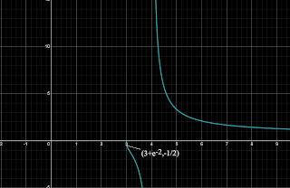
1/log(x −3)
f(x) = √(1 + sin2x)/cos x
Studiamo la funzione
domf si ottiene risolvendo il sistema:
il quale è equivalente alla sola seconda disequazione (la prima essendo sempre vera); dato che cos x ≠ 0 per x ≠ π/2 + kπ con k ∈ ℤ, abbiamo:
f è pari in quanto rapporto di funzioni pari; pertanto ci basta studiarne il comportamento in [0,+∞]. Inoltre, f è periodica di periodo T = 2π, cosicché possiamo studiare f limitamente all'intervallo di periodicità [&minu;π,π], cioè nell'insieme X2π := Domf ⋂ [−π, π] = [−π, π/2[ ∪ ]π/2, π]. Da ciò segue che, per dedurre il comportamento di f in qualsiasi punto di Dom f occorre e basta analizzare cosa acade limitatamente all'insieme X ∈ X2π ⋂ [0,+∞] = [0,π/2[ ∪ ]π/2, π]. Pertanto, d'ora in avanti supporremo sempre x ∈ X.
Abbiamo f(x) ≥ 0 in X se e solo se cosx > 0, dunque solo se x ∈ [0,π2/[. Perciò f è positiva in [0, π2[, negativa in ]π/2, π] e non si annulla in alcun punto di X.
f si esprime in X come rapporto di funzioni continue con denominatore mai nullo; pertanto, essa è una funzione continua in X. Nel punto π/2, abbiamo:
limx → π/2−f(x) = +∞
limx → π/2+f(x) = −∞
cosicché f non può essere prolungata con continuità nel punto π/2. Segue che la retta di equazione x = π/2 è un asintoto verticale per f. Dato che l'insieme X è limitato, non ha senso calcolare i limite all'infinito.
f si esprime come rapporto di funzioni derivabili all'infinito in ℝ e denominatore mai nullo; pertanto, essa è una funzione derivabile in X (ivi inclusi gli estremi 0 e π) quante volte si vuole, con derivate tutte continue in X.
La derivata prima:
f'(x) = 2sinx/(cos2x √(1 + sin2x)
Dato che sinx ≥ 0 in X, è evidente che f'(x) ≥ 0 in X; pertanto, f è crescente in ognuno degli intervalli [0, π/2[ e ]π/2, π]. Inoltre, la monotònia è stretta, poiché f′ non si annulla su alcun sottointervallo di X. La derivata si annulla in x = 0 e x = π. Dalle considerazioni circa la monotònia segue che i punti 0 e π (nei quali si ha f (0) = 1 ed f (π) = −1) sono, rispettivamente, un minimo relativo proprio ed un massimo relativo proprio per f. Inoltre, stanti le relazioni di limite per x → π2 viste sopra, la f è priva di punti di massimo o minimo assoluti.
Dato che 1 + sin2x + 2sin4x, 1 + sin2x ≥ 1 > 0, è evidente che f''(x) ≥ 0 in X non appena risulta cosx > 0, ossia per x ∈ [0,π/2[; peranto, f è convessa in [0,π/2[ e concava in ]π/2, π].
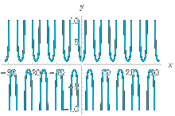
√(1 + sin2x)/cos x
f(x) = −x5 ln|3x|
domf = {ℝ \ {0}}. La funzione è dispari e ha zeri x = ± 1/3. Calcoliamo i limiti alla frontiera del dominio:
limx → ±∞f(x) = ∓∞
limx → 0+f(x) = 0+ (forma di indecisione 0 ⋅ ∞ che risulta 0 poiché l'infinitesimo x5 è preponderante rispetto all'infinito derivante dal logaritmo)
limx → 0−f(x) = 0− per lo stesso motivo del limite precedente.
La funzione è dunque prolungabile con continuità in x = 0, ponendo y(0) = 0.
La derivata prima:
f'(x) = −x4 ln|3x| − x4 = −x4(5 ln|3x| + 1)
Studiamola:
f'(x) ≥ 0
−x4(5 ln|3x| + 1) ≥ 0
poiché −x4 ≤ 0 ∀x ∈ domf, deve essere 5 ln|3x| + 1 ≤ 0.
5 ln|3x| + 1 ≤ 0 per |3x| ≤ e−1/5
Quindi f' ≥ 0 per −(e−1/5)/3 ≤ x ≤ (e−1/5)/3. Dunque la funzione ammette un minimo relativo nel punto x = −(e−1/5)/3 e un massimo relativo nel punto x = (e−1/5)/3. Entrambi non sono assoluti in quanto la funzione, per quanto visto, ha limiti infiniti. Anche la derivata prima, ponendo f'(x) = 0, è continua nel punto x = 0 (basta usare il T. del limite della derivata). Quindi il dominio di f'(x) coincide con domf.
f''(x) ≥ 0 quando:
−x3 (20 ln |3x| + 9) ≥ 0
−x3 ≥ 0 per x ≤ 0
(20 ln |3x| + 9) ≥ 0 per |3x| ≥ e−9/20, cioè x ≤ −e−9/20/3 v x ≥ e−9/20/3
Quindi f''(x) ≥ 0 per x ≤ −e−9/20/3 v 0 ≤ x ≤ e−9/20/3. Dunque la funzione ammette un flesso a tangente orizzontale in x = 0 e altri due flessi in x = −e−9/20/3 v e x = e−9/20/3. Il grafico compatibile con i risultati ottenuti, è il seguente:
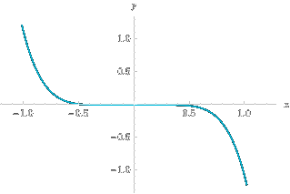
f(x) = −x5 ln|3x|
f(x) = ln(e2x + 1)
domf = ℝ. La funzione non presenta zeri in quanto non esiste alcuno valore di x che renda l'argomento del logaritmo uguale a uno. Calcoliamo i limiti alla frontiera del dominio:
limx → +∞f(x) = +∞
Poiché la funzione è un infinito di ordine uno (infatti per x → +∞, f(x) ~ ln e2x = 2x), può avere un asisntoto olbiquo. Cerchiamolo
limx → +∞f(x)/x = 2
Poi calcoliamo il valore dell'ordinata all'origine:
limx → +∞f(x) − 2x = 0
Concludiamo che per x → +∞ la funzione ha come asintoto obliquo la retta di equazione y = 2x. Per quanto riguarda l'altro limite si ha:
limx → −∞ ln(e2x + 1) = 0
quindi la retta di equazione y = 0 è un asintoto orizzontale per x → −∞. Calcoliamo la derivata prima
f'(x) = 2e2x/(e2x + 1)
è facile controllare che la derivata prima ha come dominio ℝ e che in esso è sempre positiva, di conseguenza la funzione è sempre crescente e non presenta né massimi né minimi. Per la derivata seconda
una funzione pari, che è sempre positiva e definita in tutto ℝ; non ci sono quindi punti di flesso.
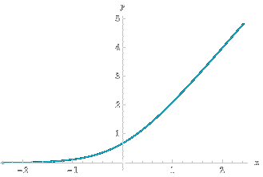
ln(e^(2x) + 1)
f(x) = ln[(e2x −2ex + 1)/(ex +1)]
La funzione si può riscrivere nel seguente modo:
quindi esiste quando dom f = {ℝ \{0}}. Calcoliamo i limiti
limx → +∞f(x) = limx → +∞x = +∞
La funzione può quindi ammettere un asintoto obliquo. Controlliamo calcolando il seguente limite:
limx → +∞f(x)/x = limx → +∞x/x = 1
Calcoliamo poi il valore dell'ordinata all'origine:
limx → +∞f(x) − x = 0
Quindi la retta y = x è asintoto obliquo per x → +∞. Calcoliamo gli altri limiti
limx → +∞f(x) = 0
limx → 0f(x) = −∞
di conseguenza la retta y = 0 è asintoto orizzontale per x → −∞. La derivata prima è
La derivata non si annulla per alcun valore di x ∈ domf, quindi non esistono massimi e minimini relativi (e neanche assoluti). Il suo segno dipende dal fattore ex −1 che si trova al denominatore; per cui per x < 0 si ha f' < 0 dunque la funzione è decrescente, mentre per x > 0, si ha f'(x), dunque la funzione è crescente.
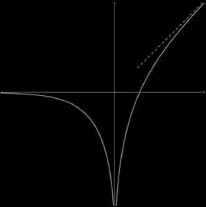
f(x) = ln[(e2x −2ex + 1)/(ex +1)]
f(x) = e−|x| √(x2 −5x + 6)
Ci aspettiamo: un punto angolo in x = 0, per la presenza di |x|; punti a tangente verticale, dove si annulla il radicando.
Dom(f): x2 −5x + 6 ≥ 0; (x − 3)(x − 2) ≥ 0; x ≤ 2; x ≥ 3.
limx → ± ∞f(x) = 0
Perciò y = 0 è asintoto orizzontale per x → ± ∞.
f(x) ≥ 0 ∀x. f(x) = 0 per x = 2, 3.
Per x → 3+, f(x) ~ e−3 √(x − 3) → 0 e ha tangente verticale in x − 3.
Per x → 2−, f(x) ~ e−2 √(2 − x) → 0 e ha tangente verticale in x = 2.
Per derivare la funzione contenente il modulo, abbiamo usato la scrittura compatta |x|' = sgn (x) per x ≠ 0; solo al termine del calcolo, per rendere più leggibile l'espressione trovata, l'abbiamo riscritta esplicitamente per x > 0 e x < 0. Calcoliamo:
x = 0 è punto angoloso per f (f non è derivabile e le tangenti, da destra e sinistra, hanno pendenze diverse).
Per x > 0 f'(x) ≥ 0 se 2x2 − 12x + 17 ≤ 0 (6 − √2)/2 ≤ x ≤ (6 + √2)/2.
(6 − √2)/2 ≃ 2.29; x ≤ (6 + √2)/2 ≃ 3.7, quindi
per 0 ≤ x ≤ 2, f(x) è decrescente;
per 2 ≤ x ≤ (6 + √2)/2, f(x) è sempre crescente;
per x ≥ x ≤ (6 + √2)/2, f(x) è sempre decrescente. x = (6 + √2)/2 punto di massimo relativo. Il massimo è circa M = f(3.7) = 0.027.
Per x < 0, f'(x) ≥ 0 se 2x2 − 3x + 1 ≥ 0, x ≤ 1/2, x ≥1, quindi:
per x < 0, f(x) è sempre crescente.
Si vede anche che x = 0 (in cui f non è derivabile) è punto di massimo; il massimo (assoluti) è M = √6. Il grafico qualitativo è in fig.. Ci sono anche due punti di flesso, uno in (0,2) e uno in (3,+∞). Si omette il calcolo di f''. ■
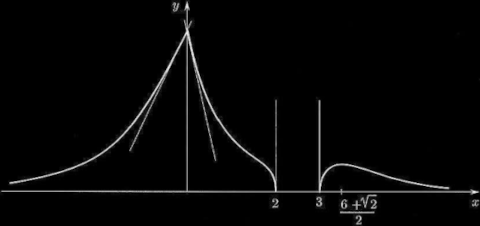
f(x) = x e(x+2)/(x − 1)
Insieme di definizione: x ≠ 1. f(x) ≥ 0 per x ≥ 0
x = 1 asintoto verticale per x → 1+. Per x → ± ∞, (x + 2)/(x − 1) → 1, f(x) ~ xe, perciò f(x) → ±∞ linearmente. Vediamo se c'è asintoto obliquo:
Ora, (x + 2)/(x − 1) − 1 = 3/(x − 1) → 0, perciò
Quindi la funzione ha asintoto obliquo y = xe + 3e per x → ±∞. (Si presti attenzione al calcolo del limite precedente: se f(x)/x → m, il limite di [f(x) − mx] è sempre una forma di indeterminazione [∞ − ∞]; raccogliendo mx, si ha mx[f(x)/mx −1], che è ora una forma di indeterminazione del tipo [∞ ⋅ 0]; questa va risolta generalmnete applicando qualche limite notevole all'espressione tra [⋅], per darne una stima asintotica).
Per ogni x ≠ 1 f'(x) è definita; per x → 1−, f'(x) → 0−1 (l'esponenziale va a zero più rapidamente di (x − 1)2). Il grafico quindi arriva in x = 1 con tangente orizzontale, da sinistra
f'(x) ≥ 0 per x2 −5x + 1 ≥ 0 x ≥ (5 + √21)/2 ≃ 4.8 x ≤ (5 - √21)/2 ≃ 0.2 x = (5 + √21)/2 punto di min rel. x = (5 - √21)/2 punto di max rel.
Grafico
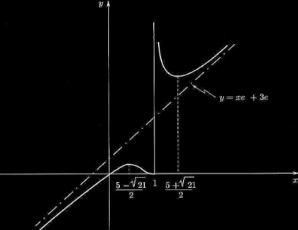
f(x) = ex∛(x + 3)/(x −2)
Domf ℝ \ {2}. f(x) = 0 per x = −3. f(x) ≥ 0 per x ≤ −3 e f(x) > 0 per x > 2. f(x) < 0 ∈ (−3,2). Asintoto verticale per x = 2:
Nei punti sopra in cui la funzione non è definita ma ha limite (destro o sinistro) finito, studiamo anche il limite della derivata prima, per sapere con quale pendenza la curva arriva in tali punti.
domf = {ℝ \ {3}}. Questo è un tipico esempio in cui l'equazione f(x) = 0 non è risolubile con passaggi algebrici. Si ha
limx → 3+f(x) = π/2 + 3/4
limx → ±∞f(x) = ±∞
che ha zeri per x = 3 e x = −1. Dato che x = 3 è un punto di discontinuità di f, possiamo solo studiare il limite della derivata in tale punto di discontinuità:
limx→3f′(x) = 0
Questo significa che quando x approaccia 3, la derivata approaccia 0, ossia la pendenza della retta tangente in x = 3 è orizzontale. L'altro punto x = − 1 è un punto di max relativo. Infatti il denominatore di f'(x) è sempre positivo, mentre il numeratore è positivo per x < 1. negativo per −1 < x < 3. Tracciamo il grafico
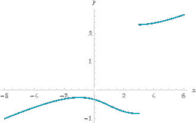
arctg[(x + 1)/(x − 3)] + x/4
f(x) = arctan x + x3 + ex (Esame di Stato, Liceo scientifico, Corso di ordinamento, Sessione ordinaria, 2017, quesito 9. Dimostrare che l’equazione f(x) = 0, ha una e una sola soluzione reale)
Dobbiamo far vedere che la funzione interseca l’asse delle ascisse. Ciò equivale a trovare due valori x1 e x2 tali che f(x1) > 0 e f(x2) < 0. Per x = 0, si trova:
quindi per il T. degli zeri, la funzione ha uno zero nell'intervallo [0,1]. Questo zero è unico se la funzione è monòtona. Troviamo la derivata prima:
La derivata prima è sempre positiva e non si annulla mai quindi la funzione è monotona crescente. Si deduce che lo zero è unico. ■
f(x) = (1 + lnx)/x
domf = ℝ+. Si ha
la funzione ha quindi un asintoto verticale per x = 0. Ricordando poi che limx → −∞ ex/x = ∞ e ponendo x = ln t, si ha limx → −∞t/lnt = +∞ e, quindi,
La funzione ha qundi la retta y = 0 come asintoto orizzontale. Osserviamo, poi, che f(x) = 0 se e solo se x = 1/e. La funzione è derivabile per x > 0 e si ha
la derivata si annulla per x = 1, ed è positiva per 0 < x < 1, negativa per x > 1. Ne segue che f(x) è crescente in (0,1) e decrescente in (1,+∞); il punto x = 1 è un punto di massimo relativo e in esso la funzione vale f(1). Ci si convince subito che si tratta di un massimo assoluto, quindi Im f = {y ∈ ℝ : y ≤ 1}. Calcolando la derivata seconda si trova
f'' è positiva per ln x > 1/2, cioè per x > √e, negativa per 0 < x < √e. Attraversando il punto x = √e la funzione cessa, dunque, di essere concava (lo è su (0, √e)) e diviene convessa su (√e, +∞)); i punti siffatti si dicono punti di flesso, in essi il grafico di f "attraversa" la retta tangente. Gli elementi raccolti sono sufficienti a tracciare un grafico approssimativo di f:
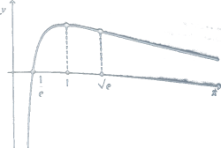x/x"/>
Con facili considerazioni sulle simmetrie rispetto agli assi, si studiano allora anche i grafici delle funzioni
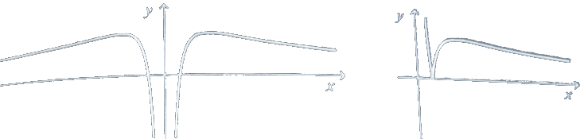
f(x) = |ex −1|/(1+ |x|)
domf = ℝ, si ha f(0) = 0 mentre per x ≠ 0 risulta f(x) > 0. Si ha, poi
quindi
Nel punto x = 0 la funzione non è derivabile in quanto
ricordando il limite notevole. La derivata è positiva per x > 0 quindi f è crescente, mentre per x < 0 la derivata è positiva quando (x − 2)ex + 1 > 0, cioè quando e−x > 2 − x. Poiché la differenza
F(x) = e−x > 2 − x
ha derivata F''(x) = -exx + 1 negativa (per x < 0 si ha e−x > 1), vi è un unico x0 per il quale e−x0 = 2 − x0 per il quale e−x = 2 − x. Per x < x0 si avrà e−x > 2 − x e quindi f sarà crescente. Per x0 < x < 0 varrà invece la disuguaglianza opposta e allora f sarà decrescente. Il punto x0 è di massimo relativo per f. Poiché inoltre F(−2) = e2 − 4 > 0, F(−1) = e − 3 < 0 il punto x0 è compreso fra −2 e −1. Esaminando la derivata seconda f''(x) si ha
Per x > 0 la derivata seconda ha lo stesso segno di (1 + x2) − 2e−x, dunque, è dapprima negativa, si annulla in un punto x1 compreso fra 0 e 1 e, per valori maggior di x1, è positiva. Per x < 0 la derivata seconda ha lo stesso segno di 2e−x −(xsup>2 −4x + 5), allo stesso modo si vede che essa cambia segno in un unico punto x2 compreso fra −3 e −2. I punti x1 e x2 sono di flesso per la funzione f(x). Gli elementi trovati consentono di tracciare il grafico qualitativo di f illustrato di seguito.
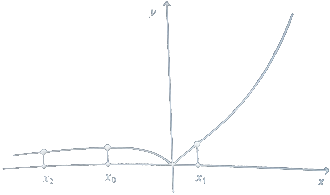
f(x) = ∛xex
dom f = ℝ; limx → −∞f(x) = 0; e limx → +∞f(x) = +∞.
f'(x) = ex(3x +1)/3x2/3. f'(-1/3) = 0, osserviamo che 3x + 1 ≥0 per x ≥ −1/3 e 3x + 1 ≤ 0 per x ≤ −1/3, quindi −1/3 è un punto di min assoluto e f(−1/3) ≈ -0.5.
Im f = {y ∈ ℝ : y ≥ f(−1/3) ≈ -0.5}
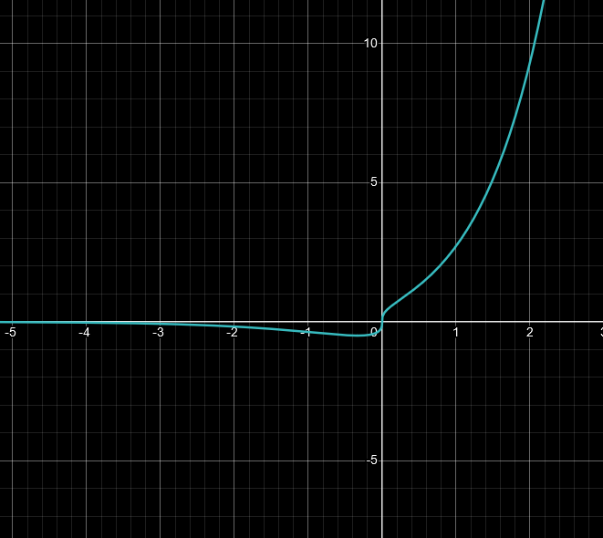
f(x) = x4 −8x3 + 22x2 − 24x + 12
dom f = ℝ.
limx → ± ∞f(x) = +∞
f'(x) = 4(x3 − 6x2 + 11x − 6). f'(x) = 0 per x = 1, x = 2 e x = 3. La derivata è quindi negativa nell'intervallo (−∞, 1), e (2, 3), positiva in (1,2) e (3,+∞). Il grafico di f'(x) è il seguente
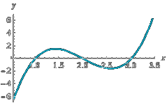
f'(x) = 4(x3 − 6x2 + 11x − 6)
Di conseguenza x = 1 e x = 3 sono punti di minimo assoluto mentre x = 2 è un punto di massimo locale; f(1) = f(3) = 3.
Im f = {y : ℝ: y ≥ 3}
Il grafico di f è:
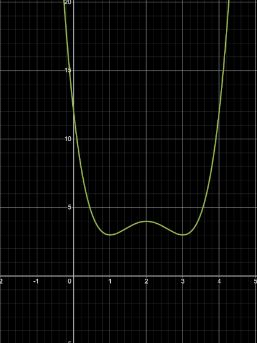
f(x) = x4 −8x3 + 22x2 − 24x + 12
f(x) = x5 − 5x4 + 5x3 +1
dom f = ℝ. f'(x) = 5x4 − 20x3 + 15x2 = 5(x4 − 4x3 + 3x2). Le radici della derivata prima sono x = 0, x = 1, x = 3, di cui x = 0 è una doppia radice essndo f' divisibile per (x − 0) (x − 0) = x2. Si osserva che f' è negativa nell'intervallo (-∞, 0) e in quello (1, 3) e positiva in (0,1) e (3, +∞); quindi x = 3 e x sono punti di minimo locale, mentre x = 1 è un massimo. Imf = ℝ.
f(x) = x2 logx
dom f = ℝ+.
f'(x) = x + 2x logx = x (2 log(x) + 1) = 0. Quindi f'(1/√e) = 0. Essendo l'unica radice basta valutare f' per un valore maggiore e minore della radice per capire che si tratta di un minimo assoluto: f(1/√e) = −1/2e, quindi Im f = {y ∈ ℝ: y ≥ −1/2e}.
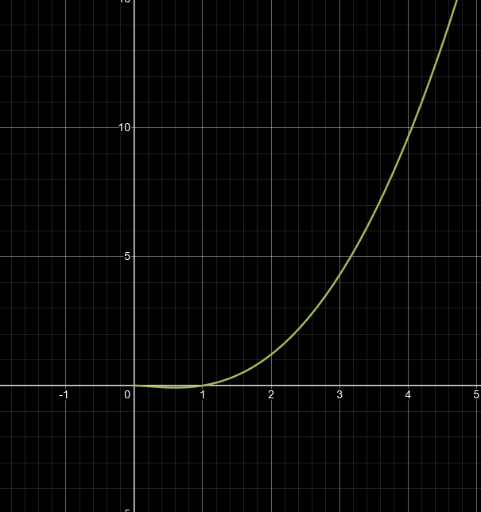
f(x) = √x log x
dom f = {x ∈ ℝ: x > 0}. f(1) = 0. f'(x) = (log(x) + 2)/2√x. f'(1/e2) = 0. f' è negativa nell'intervallo (0,1/e2) e positiva in (1/e2, +∞), dunque x = 1/e2 è un punto di minimo assoluto e Im f: {y ∈: ℝ: y ≥ −2/e}.
f(x) = (x + 2)/(x2 + 1)
dom f = ℝ. f(−2) = 0. f'(x) = -(x2 + 4x −1)/(x2 + 1)2 con radici x = −2 ± √5.
La derivata è negativa nell'intervallo (−∞, −2 − √5) e (−2 + √5, +∞), positiva nell'intervallo (−2 − √5, −2 + √5). Quindi x = −2 - √5 è un punto di minimo assoluto e x = −2 + √5 è un punto di massimo assoluto.
Im f = {y ∈ ℝ : 1 − √5/2 ≤ y ≤ 1 − √5/2}.
f (x) = (x2 + 3x + 2)/(x + 3)
domf = {ℝ \ {3}}. Le radici sono x = −1 e x = −2. Quindi possiamo riscrivere f come f(x) = (x + 1)(x + 2)/(x + 3). f(x)≥0 negli intervalli (−3,−2) e [−1,∞).
Si ha un asintoto obliquo per x ⟶ ± ∞. Si verifica facilmente che f(x) ∼ x quindi, y = x è un asintoto obliquo, infatti
limx → ±∞f(x)/x = ±1
La derivata
Gli zeri di f' sono x = −3 ± √2. f′(x) ≥ 0 for x ∈ (−∞,−3−√2]∪[−3+√2,∞). At x = −3−√2, f′(x) changes from positive (to the left) to negative (to the right), quindi si ha un max locale. At x = −3+√2x: f′(x) changes from negative to positive, which indicates a local minimum.
La derivata seconda
f'' is positive per x > −3 quindi convessa, mentre per x < −3 è negativa quindi concava. Il grafico
Approximate roots When x = 0, f(0) = −1 and when x = 1, f(1) = 7, so there's a root between 0 and 1. For x = −2, f(−2) = 7, and for x = −3, f(−3) = −1, so another root is between -3 and -2. A third root must be between 0 and −2 as f(0) = −1 and f(−2) = 7.
f'' = 2(x3 + 6x2 + 12x + 1)/(x + 2)3
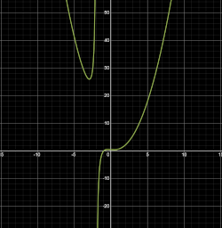
f(x) = (x3+1)/(x+2)
f(x) = (x2 + 2x −3)/(5x2 + x)
Possiamo riscrivere f come
f(x) = (x − 1) (x + 3)/x(5x + 1)
dom f = {x ∈ ℝ: x ≠ 1/5 v x ≠ 0}. f(x) = 0 per x = 1 v x −3.
Un asintoto obliquo si verifica quando il grado del numeratore è maggiore di quello del denominatore di esattamente uno. In questo caso, il numeratore è di grado 2 e il denominatore è di grado 2, quindi non ci sarà un asintoto obliquo.
f'(x) = (−9x2 + 30x + 3)/(25x4 + 10x3 + x2)
con radici x = 5/3 ± (2√7)/3. f'(x) ≥ 0 per 5/3 − (2√7)/3 ≤ x ≤ 5/3 + (2√7)/3. Quindi x = 5/3 − (2√7)/3 è un punto di min locale e x = 5/3 + (2√7)/3 è un punto di max locale.
f(x) = x log1/3x
domf = {x ∈ ℝ: x > 0}. f(x) = 0 per x = 1. f(x) ≤ 0 per x ∈ (0,1].
limx → 0+f(x) = 0
limx → +∞f(x) = +∞
Non ci sono asintoti obliqui. La derivata prima
f'(x) = (3log x + 1)/(3log3/2x)
is always positive in domf e si annulla per x = e−1/3. Dal fatto che questo è l'unico punto stazionario e che f(x) ≤ 0 per x ∈ (0,1] deduciamo che si tratta di un min locale. Si ha un asintoto verticale in x = 1:
limx → 1f'(x) = ∞
f(x) = xe1/(1 − |x|)
dom f = {x ≠ ±1}. f = 0 per x = 0; f > 0 per x > 0 e f < 0 per x < 0.